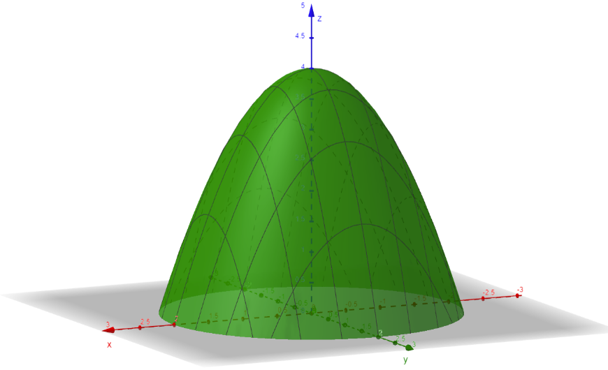

Double Integrals in Polar Coordinates
An Example
Let \(R\) be the region in the plane determined by \(x^2 + y^2 \le a^2\). Use polar coordinates to evaluate the integral below. Then use your knowledge of geometry to make sense of the result.
The region is a disk of radius \(a\): \(0 \le r \le a\) and \(0 \le \theta \le 2\pi\).
This is the area of a circle of radius \(a\).
An Example
Evaluate the integral below.
An Example
Evaluate the double integral below by converting to polar coordinates.
The limits describe the disk \(x^2 + y^2 \le 1\): \(0 \le r \le 1\) and \(0 \le \theta \le 2\pi\). Also, \(1 - x^2 - y^2 = 1 - r^2\).
An Example
Let \(R\) be the region in the first quadrant enclosed by \(x^2 + y^2 = 1\) and \(x^2 + y^2 = 64\). Evaluate the double integral below.
The region is \(1 \le r \le 8\) and \(0 \le \theta \le \frac{\pi}{2}\), and \(y = r\sin\theta\).
An Example
Let \(R\) be the region enclosed by the rays \(\theta = 0\) and \(\theta = \pi/4\) and the circle \(r = 6\). Use the double integral below to find the area of \(R\).
This matches the area of a sector: \(\frac{1}{8}\) of a circle of radius \(6\), or \(\frac{1}{8} \cdot 36\pi = \frac{9\pi}{2}\).
An Example
Let \(E\) be the solid that lies above the \(xy\)-plane and below the surface below. Use polar coordinates to find the volume of \(E\).

In polar coordinates, \(f = 4 - r^2\). The surface meets the \(xy\)-plane where \(4 - r^2 = 0\), so \(0 \le r \le 2\) and \(0 \le \theta \le 2\pi\).